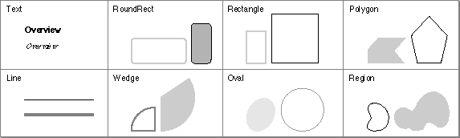
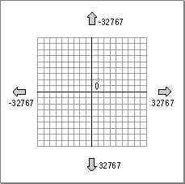
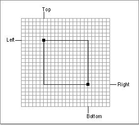
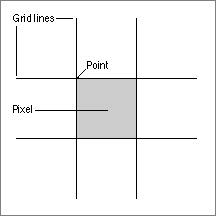
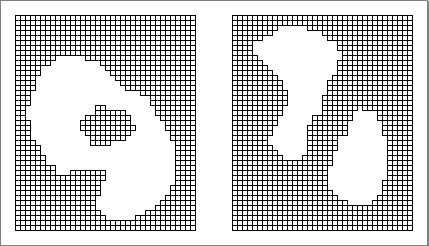
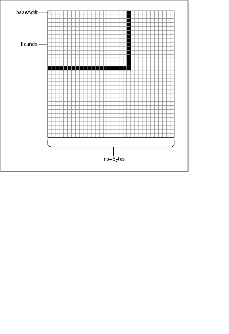

About QuickDraw
QuickDraw allows you to draw many types of objects on the Macintosh display screen. Some of these objects are illustrated in Figure 5-1.Figure 5-1 Samples of QuickDraw's abilities

As you can see, you can use QuickDraw to draw
This section explains the basic mathematical model employed by QuickDraw and shows how you can define several of these sorts of objects.
- text characters and strings in a number of fonts, sizes, and styles
- straight lines of any length, width, and pattern
- a variety of simple shapes, including rectangles, rounded-corner rectangles, circles, and ovals
- polygons
- arcs of ovals, or wedge-shaped sections filled with a pattern
- any other arbitrary shape or collection of shapes
- bit images, such as icons, cursors, and patterns
Points
QuickDraw measures location and movement in terms of coordinates on a very large plane. The plane is a two-dimensional grid, with integer coordinates ranging from -32767 to 32767, as illustrated in Figure 5-2.Figure 5-2 The coordinate plane

The intersection of a horizontal and a vertical grid line marks a point on the coordinate plane. Because all coordinates are limited to simple integers, there are 4,294,836,224 unique points in the QuickDraw plane.
You can store the coordinates of a point into a Pascal variable of type
Point, defined by QuickDraw as a record of two integers:TYPE VHSelect = (v,h); Point = RECORD CASE INTEGER OF 0: (v: Integer; {vertical coordinate} h: Integer); {horizontal coordinate} 1: (vh: ARRAY[VHSelect] OF Integer); END;The variant part of this record lets you access the vertical and horizontal coordinates of a point either individually or as an array. This book will always use the first way of specifying the coordinates. So, for example, the vertical coordinate of the variablemyPointis accessed asmyPoint.v.Rectangles
Any two points can define the upper-left and lower-right corners of a rectangle on the coordinate plane, as shown in Figure 5-3.
You can describe a rectangle using a data structure of type
Rect, which consists of four integers or two points.TYPE Rect = RECORD CASE INTEGER OF 0: (top: Integer; {top coordinate} left: Integer; {left coordinate} bottom: Integer; {bottom coordinate} right: Integer); {right coordinate} 1: (topLeft: Point; {upper-left point} botRight: Point); {lower-right point} END;Once again, the record variant allows you to access a variable of typeRecteither as four boundary coordinates or as two diagonally opposite corner points. This book will always use the first way of specifying a rectangle. So, for example, the top coordinate of the variablemyRectis accessed asmyRect.top.A pixel is a physical dot on the screen and corresponds to a rectangle in the QuickDraw coordinate plane that has sides one coordinate long, as shown in Figure 5-4. (This, of course, is the smallest possible rectangle.)
- Note
- If the bottom coordinate of a rectangle is less than or equal to the top coordinate, or if the right coordinate is less than or equal to the left coordinate, the rectangle is treated as an empty rectangle (that is, one that has no area).
Figure 5-4 Pixels and rectangles

You can think of a pixel as corresponding to the point at the top left of the rectangle. There are many more points in the QuickDraw coordinate plane than there are pixels on the screen. As a result, you'll associate small parts of the coordinate plane with areas on the screen. In general, you don't need to worry about where in that large coordinate plane you're working, because QuickDraw always forces you to work with a particular graphics port, which has its own local coordinate system. (A graphics port is a complete drawing environment that defines where and how graphics operations will take place; see page 92 for more information on graphics ports.)
To draw a line, you can simply move to the desired starting point of the line and draw to the desired end. For example, to draw a line in the current graphics port from point (100,150) to the point (200,250), you could do this:
MoveTo(100, 150); LineTo(200, 250);To draw a rectangle, you need to proceed in a slightly different manner. You first need to define the rectangle in the coordinate plane and then perform some graphical operation on the rectangle. Here's an example:SetRect(myRect, 100, 200, 300, 400); FrameRect(myRect);These two lines of code define a rectangle and then frame it (that is, draw its outline). Instead of just drawing the rectangle's outline, you could also fill the rectangle with the current pattern (by callingPaintRect) or with some other pattern (by callingFillRect).QuickDraw does not contain data types that describe circles or ovals. Instead, you draw an oval by defining a rectangle and then asking QuickDraw to draw the oval that fits inside of the rectangle. The oval is completely enclosed within the rectangle, and never includes any pixels lying outside the boundary. If the rectangle is a square, then the oval is a circle.
- Note
- Coordinates are passed to
SetRectin the order left, top, right, bottom (which is different from the order in theRectdata type). The word litterbug is a useful mnemonic; it contains the letters l, t, r, and b in the correct order.
Regions
One of QuickDraw's most powerful capabilities is the ability to work with regions of arbitrary size, shape, and complexity. You define a region by drawing its boundary with QuickDraw operations. The boundary can be any set of lines and shapes (even including other regions) forming one or more closed loops. A region can be concave or convex, can consist of one connected area or many separate ones, and can even have holes in the middle. In Figure 5-5, the region on the left has a hole in it, and the region on the right consists of two disjoint areas.
QuickDraw describes a region using a data structure of type
Region. This structure contains two fixed-length fields followed by a variable-length field.TYPE Region = RECORD rgnSize: Integer; {size in bytes} rgnBBox: Rect; {enclosing rectangle} {more data if not rectangular} END; RgnPtr = ^Region; RgnHandle = ^RgnPtr;ThergnSizefield contains the size, in bytes, of the region variable. ThergnBBoxfield contains a rectangle that completely encloses the region. In general, however, you'll treat theRegiondata structure like a "black box"; you shouldn't need to read the two named fields except in special circumstances.The Venn Diagrammer application uses a number of regions to pick out the areas defined by the overlapping circles. See "Drawing Shapes" beginning on page 94 for details.
Bit Images
Points, rectangles, and regions are mathematical models--data types that QuickDraw uses for defining areas on the screen--but they can also be graphic elements that actually appear on the screen. A rectangle, for example, can mathematically define a particular visible area, but it can also be an object to be framed, painted, or filled. QuickDraw also defines a number of other graphic elements, including icons, bitmaps, patterns, and other bit images, that have only a direct graphic interpretation. An icon, for instance, defines an image not by mapping an abstract mathematical representation onto the screen pixels but by directly indicating which pixels in a given area are to be black and which are to be white.The Macintosh user interface uses bit images extensively, so QuickDraw contains a number of additional data types describing such direct entities and routines to draw them. The Venn Diagrammer application uses two kinds of bit images: bitmaps and patterns.
- IMPORTANT
- The discussion in this section applies only to black-and-white bit images, which are the simplest cases. For complete information on color bit images (such as color icons), see Inside Macintosh: Imaging.
A bitmap is a data structure that defines a physical bit image in terms of the coordinate plane. A bitmap has three parts: a pointer to a rectangular collection of bits, the row width of that rectangular collection, and a boundary rectangle that gives the bitmap both its dimensions and a coordinate system.
The structure of a bitmap is defined by the
BitMapdata type:TYPE BitMap = RECORD baseAddr: Ptr; {pointer to bit image} rowBytes: Integer; {row width} bounds: Rect; {boundary rectangle} END;Figure 5-6 shows how these three pieces of information define a particular bitmap.
The
baseAddrfield is a pointer to the beginning of the bit image in memory. TherowBytesfield is the row width, in bytes. (BothbaseAddrandrowBytesmust contain even values.) Theboundsfield is the bitmap's bounding rectangle. See "Drawing Bit Images" beginning on page 99 for a description of how to display a bitmap.Ports and Windows
All drawing takes place in a controlled drawing environment known as a graphics port. The graphics port defines a number of drawing parameters, such as the current drawing location, the current font and size used for drawing characters, and so forth. In general, you can think of a graphics port as the window within which you're currently drawing.A graphics port is defined by the
GrafPortdata structure.TYPE GrafPort = RECORD device: Integer; {device-specific information} portBits: BitMap; {GrafPort's bit map} portRect: Rect; {GrafPort's rectangle} visRgn: RgnHandle; {visible region} clipRgn: RgnHandle; {clipping region} bkPat: Pattern; {background pattern} fillPat: Pattern; {fill pattern} pnLoc: Point; {pen location} pnSize: Point; {pen size} pnMode: Integer; {pen's transfer mode} pnPat: Pattern; {pen pattern} pnVis: Integer; {pen visibility} txFont: Integer; {font number for text} txFace: Style; {text's character style} txMode: Integer; {text's transfer mode} txSize: Integer; {font size for text} spExtra: Fixed; {extra space} fgColor: LongInt; {foreground color} bkColor: LongInt; {background color} colrBit: Integer; {color bit} patStretch: Integer; {used internally} picSave: Handle; {picture being saved} rgnSave: Handle; {region being saved} polySave: Handle; {polygon being saved} grafProcs: QDProcsPtr; {low-level drawing routines} END; GrafPtr = ^GrafPort;The fields of aGrafPortdata structure are maintained by QuickDraw, and you should never write directly into those fields. You can, and often must, read the fields of aGrafPortstructure. For example, it's often useful to read theportRectfield of a variable of typeGrafPort, because it gives the rectangle around the content area of a window. (That information was used in Listing 1-1 on page 3 to center a text string.)QuickDraw always performs drawing operations on the current graphics port. As a result, you should explicitly set the graphics port before doing any drawing. A safe strategy is to save and later restore the original graphics port upon entry to any routine that affects the screen. Listing 5-1 shows an example.
Listing 5-1 Saving and restoring the current graphics port
PROCEDURE DrawInPort(thePort: GrafPtr); VAR origPort: GrafPtr; BEGIN GetPort(origPort); SetPort(thePort); {Do your drawing (erasing, etc.) here.} SetPort(origPort); END;Notice that QuickDraw uses theGrafPtrdata type to refer to graphics ports. For historical reasons, theGrafPortdata structure is one of the few objects in the Macintosh system software that's referred to by a pointer rather than a handle.